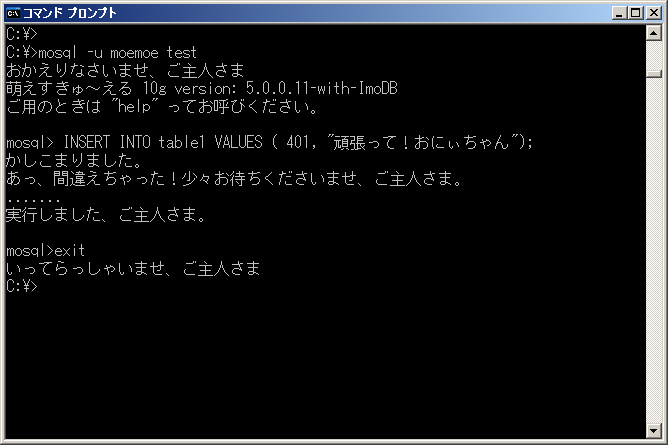

日本MySQLユーザ会(MyNA)では、昨今のオープンソースデータベース情勢を鑑み、MoSQL を開発しております。本日ようやくこの情報をみなさんに公開できるようになったことを、とても嬉しく思っています。
MoSQLは、MySQL 5.0 をベースにした DBMS で、サーバは GPL ライセンスにより使用することができます。
最初の公開バージョンは MoSQL 10g 5.0.0.11 になる予定です。
MoSQLは、MySQL 5.0 と比較して、以下の特徴があります。
- ユーザ会によるユーザ会のための DBMS です。
- 文字コードを自動変換しないモードをデフォルトとしています。
- 日本語による正規表現に対応しています。
- 文字コードの範囲外のバイト列であってもそのまま格納されます。データが失われることはありません。
- ユーザフレンドリーなメッセージ表示により、やる気が倍増します（下記画面例）。
- 非常に動作が軽快になっています。バージョン番号の 10g には、10g程度の軽さ、の意味が込められています。
- 独自開発したトランザクション対応ストレージエンジン ImoDB を搭載しています。
- ImoDB の現在バージョンは tane ですが、正式リリース時には jagger になる予定です。
- ImoDB は、日本語による分かち書き不要の全文検索機能を搭載しています。
- 常に最新バージョンに対応した日本語ドキュメントを提供予定です。
- 公式サイトはすらすらと流れるような日本語で記述されています。
なお、本情報は本日限りの特別情報です。また、本情報により受けたいかなる損害についても当ユーザ会は関知いたしません。本ソフトウェアの情報は、MySQL AB, MySQL Inc, MySQL KK らとはなんら関係がありません。
※MoSQLは「萌(も)えすきゅ〜える」と発音します。

14:10追記： ユーザの方から効果音に関する要望をいただきました。 ユーザフレンドリーを目指す MoSQL としては効果音は非常に重要なものと考え、即決採用しました。
最新バージョンではクライアント起動時に「もきゅ」という音が鳴ります。
14:50追記： プロンプト表示が時々おかしくなるという報告を、ユーザの方からいただきました。 即座に修正し、画面イメージを最新版に差し替えました。ご報告ありがとうございました。
2006/04/03 追記： 諸般の事情により、本発表を一旦取り下げさせていただくこととなりました。 オトナの事情として何卒ご理解の程をよろしくお願い申し上げます。
日本MySQLユーザ会のトップページからはすでにリンクされない状態となっていますが、直接ニュースのURLを指定した場合には当分ご覧いただるようにしたいと思います。
また、本DBMSの発表に際し、多くのみなさまからたくさんの暖かいご支援をいただきました。厚く御礼申し上げます。
今後とも 日本MySQL ユーザ会および MySQL をどうぞよろしくお願い致します。